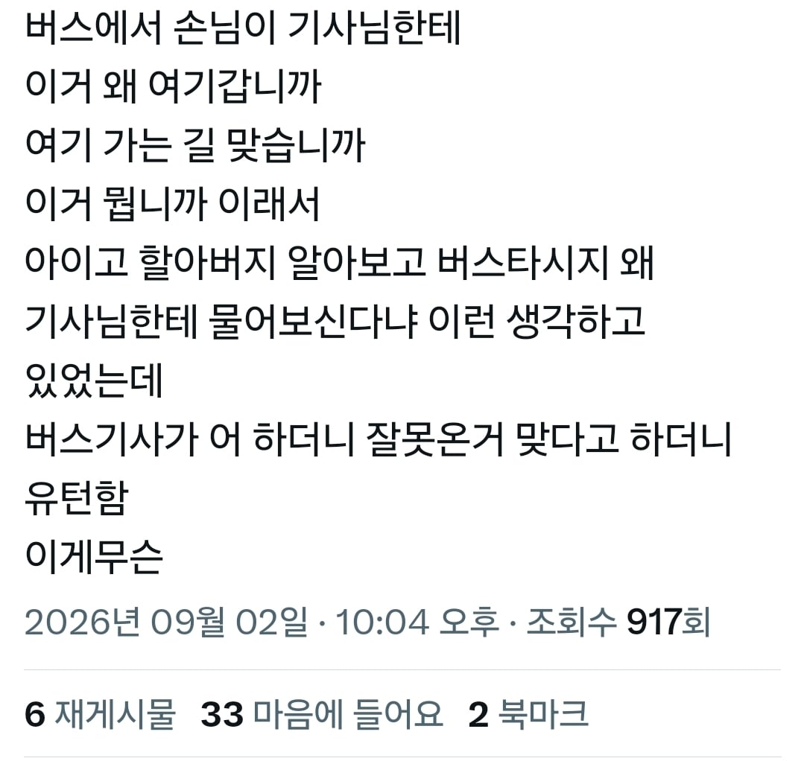

할아버지가 기사님보다 ㅋㅋㅋㅋ
저 길을 오래 다니시긴했겠네


근데 진짜로 ㄹㅇ 버스가 경로 이탈하면 어떻게됨? 궁금하네
다시 돌아서 경로
경로이탈에 대한 시말서 쓰는걸로 알고있음
배차간격, 정시성같은걸 맞춰야 하나 보더라고
예전에 탔던 시외버스가 늦었는지 갓길에서 밟다가 단속걸린적 있었음
시내버스의 경우 경로 이탈하면 어떻게 되려나
경로이탈에 대한 시말서 쓴대!
크게 이탈한건 아니었긴 한데
앗 승객여러분 죄송합니다 길 잘못들었네요~ 하고 돌아서 원래 다음 정류장으로 갔음
이탈하면 걍 이탈한거임
많이 이탈해봤는데 그냥 담부터 조심하세요하면 끝
땜빵뛰는 기사님이 종종 저런실수 하시드라
내가 봤던 버스도 몇 블럭 더 가서 우회전 하고 내려줘야하는데 바로 우회전 때리더니 거기 정류장에 내려주더만
유턴하더라 ㅋㅋㅋㅋㅋ 내린 승객 두리번 거리더니 버스 사라지는거 멀뚱멀뚱 쳐다봄 ㅋㅋㅋㅋ
기사들도 한번씩 노선 변경해서 실수할때도 있겠더라.
컬투쇼 사연같네 ㅋㅋㅋㅋㅋㅋㅋ
"살아남았다는건 강하다는 것"
비슷한 일 겪어봤음ㅋㅋ 강풍으로 나무가 많이 넘어져서 길이 여기저기가 막혔는데 통근버스 기사가 이리저리 길을 꺾어서 가는 것 같더니 나중에는 우리한테 어디로 가야 하냐고 물어보더라ㅋㅋ 자기는 가는 길만 가지 여기 안 살아서 모른다고
2년전에 폭설로 비슷한 일 겪어봄ㅋㅋ
고속도로에서 통제되고 강제로 나가고
낯선동네니까 기사아저씨가 막 뒤에분들한테 물어봄ㅋㅋㅋ
하이가~ 제가 원래 58-1 기사인데 58-2 기사 집에 초상났다고 대신 몰았거든예 미안합니다이
옛날에 시외버스탔는데
승객이 나밖에 없었고 차고지로 가는 방향이었는데
기사 아저씨가 어디사냐고
물어보더니 노선이랑 상관없는 숏컷으로 질러가더라ㅋㅋ
연천에서 한번 겪어봤는데 손님 나밖에 없는데 기사님이 소리지르길래 뭐지 하고 이어폰 뺐더니 어디가시냐고~~~~~ 이래서 어디 갑니다 했더니 원래 윗동네 ㄱ자로 찍고 와야하는거 걍 다른길로 논스톱으로 꽂아주심.. ;;
ㅋㅋㅋㅋㅋㅋ 너도 비슷한 경험이 있그나
시외버스타고 놀러가는데 갑자기 차세우고 기사랑 앞자리 승객이랑 뭐라고 얘기하더니 유턴하더라
길 잘못들어서 반대로 가고있었고 덕분에 3시간 추가됨 시발
ㅋㅋㅋ 저 썰보니 예전에 나랑 입사동기 형님 지선노선 타고있는데
나는 램프구간 올라가고 그 형님은 지선노선 이니깐 램프구간 옆으로 해서 빠져나가야 하는데, 어째서인지 램프를 나랑같이 올라가고 있음
전화해서 형님 뭐해요! 하니깐, 뭐하긴 운행하지 뭔데 이러길래... 형님 지선타는데 왜 나랑같이 램프 올라가고 있냐 말하니 "아 씨1바 좆됐다 아!!!" 이러고선 사거리에서 유턴해서 갔던 기억이 나네 ㅋㅋㅋ
노선(버스번호)바뀌셧는데 옛날노선으로가셧나봄
노선이탈이네 ㅋㅋㅋㅋㅋ 가끔봄
난 항상 이게 궁금했었어 버스 길 잘못 들면 어떻게 될지 ㅋㅋㅋ 살면서 한번도 못봄
깡촌시골가니까 시장갔다오는 할머니 한두명만 타니까
집으로갑니까 회관으로갑니까 하면서 원하는대로 내려주더라
경로이탈했다고 안내 안나오나? 예전에 도로 붕괴로 예정에 없던 우회를 할 때 경로 벗어났다고 방송나왔던거갔은데
라디오 사연식의 유머인데 존나 웃기네